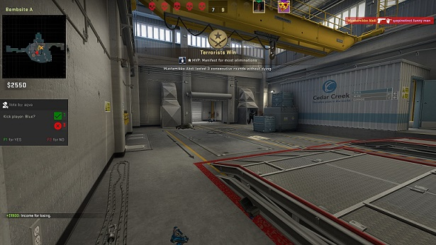

The game in short
Counter-Strike: Global Offensive is a shooter game. It has multiple gamemodes like Casual, Deathmatch and Gungame, but the only real gamemode is Competitive. In this gamemode there are 10 players, 5 on the attacking team and 5 on the defending team. The attacking team has to plant a bomb on one of the two sites. The sites are close to the center of the map but not connected most of the time. The defending team has to prevent the other team from planting the bomb. When the attacking team plants the bomb, the defending team has 40 seconds to defuse it. This takes either 5 or 10 seconds, depending on if they have a defuse kit or not. The match lasts until one of the teams reaches 16 points or both teams reach 15, resulting in a draw.

The maps
There are several different maps in the game. Luckily, you can choose what map/s you want to play on. Some people only play on 1 or 2 maps, because they like them. For me, that would be the map Nuke. On Nuke, you play in a Nuclear Powerplant in Germany. There is also the map Dust II, which is the only map. Most of the maps benefit one of the teams more. That is why the teams swap places in the middle of the round.
The gunplay
In csgo, the gunplay is a bit finicky. With most of the guns you only shoot accurately if you stand completely still. With some guns, namely machine pistols you can run full speed and only hit the enemy's head. Obviously, hitting the head deals the most damage. The guns also cost very different amounts of money, wich you gain by defeating enemies, winning rounds and planting or defusing the bomb.
All in all
I find csgo to be one of the best shooter experiences i've had. Even tough it released back in 2012, it's community is still very active. I am not very good at it but it's fun to play it with my friends and even with strangers.